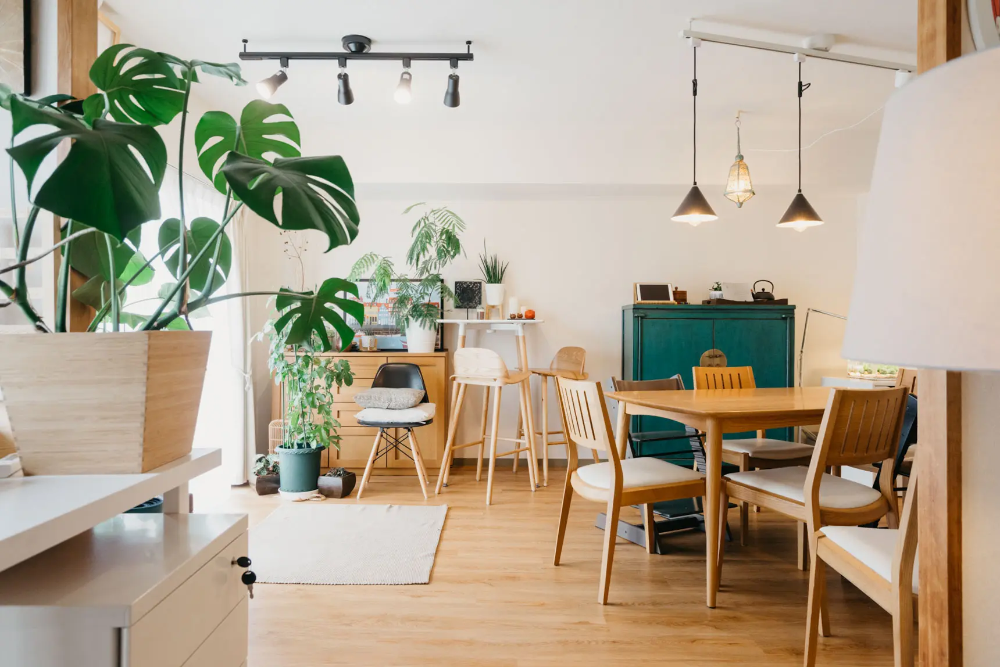

01OUR PHILOSOPHY

自然素材素材が呼吸する、心地よい室内環境。
OUR PROMISE
自分が住みたくない家は、
建てたくない。
食べ物と同じように、住まいの素材も家族の健康に関わります。だから私たちは、毎日触れる床や壁に、無垢材や漆喰などの天然素材を使います。
ただ安い家ではなく、安心して長く暮らせる家を納得できる価格で。無駄な経費を抑え、一棟ずつ正直に家づくりをしています。
- 漆喰SHIKKUI
- 無垢材SOLID WOOD
- 自社大工CRAFTSMANSHIP
02EXTERIOR WORKS
FUJISOU AINOS GALLERY
街並みに、暮らしの個性を。
室内の心地よさだけでなく、雪国での使いやすさや周囲の景観まで考えた外観。富山で実際に手がけた住まいをご紹介します。


03THREE FREE-PLAN HOMES
AINOS HOME COLLECTION
ご家族に合う家を、選べます。
性能を大切にしたい。かわいい家に住みたい。天然素材にこだわりたい。3つのプランから、理想の暮らしに合う家をお選びください。
 01
01SIMPLY
洗練 × 高性能
洗練されたデザインと、機能的な設計の高性能住宅。
- 自然エネルギーを活用するZEH志向
- 天然素材を使った安全性への配慮
- 高性能設備による省エネ設計
- セキュリティ対応設計
- 最長60年の長期保証プログラム
FOR — シンプルな意匠、性能、光熱費のバランスを求める方
 02
02Pretty
かわいい × DIY
セルフビルドでつくる、「かわいい」がいっぱい詰まった住宅。
- 自然素材を生かすDIY住宅
- シャビーシックやアンティークの表情
- カラータイルとステンドグラス
- 無垢の木でつくるキッチン
- 省エネ性能と最長60年の長期保証
FOR — 色、素材、手づくりの楽しさを住まいに取り入れたい方
 03
03Healthy
自然素材 × 健康
住む人の健康を第一に考えた、本物の自然素材住宅。
- 不健康素材ゼロを目指す7つの挑戦
- 乾燥無垢材、無垢床、漆喰の塗り壁
- セルロースファイバー断熱
- 耐震等級3の災害に強い設計
- 温湿度差を抑える快適性と省エネ設備
FOR — 空気、素材、耐震性まで妥協せず家族の健康を守りたい方
04 CHOOSE YOUR HOME
あなたに合う家は、どの家ですか？
写真を見ながら、それぞれの家づくりをご覧ください。気になるプランを選ぶと詳しい内容を確認できます。
 01 / 03
01 / 03SIMPLYシンプルで高性能な家
使いやすい間取りと省エネ性能で、毎日の暮らしを快適に。
 02 / 03
02 / 03Prettyかわいいを楽しむ家
タイルや無垢材、DIYを取り入れて、自分らしい住まいに。
 03 / 03
03 / 03Healthy家族の健康を考えた家
無垢材と漆喰を使い、安心して子育てできる住まいに。
間取りや仕様は、ご家族のご希望とご予算に合わせてご提案します。

05HEALTHY MATERIAL POLICY
SEVEN CHALLENGES
家族の健康を守る、7つの素材選び。
毎日を過ごす家だからこそ、できるだけ身体にやさしい素材を選びます。
- 01集成材を使わない乾燥無垢材の構造
- 02合板フローリングを使わない無垢フローリング
- 03ビニールクロスを使わない漆喰の塗り壁
- 04素材を選ぶ断熱セルロースファイバー
- 05化粧合板建具を使わない無垢材建具
- 06樹脂造作材を使わない無垢造作材
- 07農薬系防蟻剤を使わないホウ酸による防蟻
性能・保証
安心して、長く暮らせる家。
丈夫な構造、快適な室内、完成後の保証。目に見えない部分も、ご契約前に分かりやすくご説明します。
耐震等級3
一棟ごとに構造を確認し、地震に強い家をつくります。
断熱と調湿
天然素材の力を生かし、夏も冬も過ごしやすい室内へ。
内容を明確に
使う材料や保証、将来のお手入れまで事前にお伝えします。
長期保証
お引渡し後も、末永くお付き合いします。
定期点検と保証制度で、大切な住まいを長く見守ります。
最長60年保証には、所定の点検やメンテナンスなどの条件があります。
BUILDING JOURNEY
出会いから完成後まで、
7つのステップ。
ボタンを選ぶと、その段階で何を決めるのかを確認できます。
話
まずは気軽にご相談
希望の暮らし、予算、土地の有無、不安に感じていることを伺います。
費用：無料相談JOURNAL & EVENTS
イベント・ブログ
見学会のお知らせと、富山での家づくりに役立つ情報をお届けします。

LOCAL BUILDER IN TOYAMA
富山の家族に、富山の家を。
フジ創アイノスは、高岡市の本社・ショールームと富山市の事務所を拠点に、高岡市・砺波市・富山市・射水市・南砺市などで注文住宅を手がけています。自然素材の平屋、2階建て、土地探し、住宅ローン、リフォームまで、地域の身近な相談相手として家づくりを支えます。
- TAKAOKA HEAD OFFICE / SHOWROOM
- 〒933-0062 富山県高岡市江尻846-1
- TOYAMA OFFICE
- 〒939-8006 富山県富山市山室256-4 SKビル 2-A
- OPEN
- 9:00–18:00 / 水曜・木曜定休
- CONTACT
- 0800-200-2661
CONTACT
家づくりのこと、
まずは気軽にご相談ください。
土地や予算が決まっていなくても大丈夫です。
ご都合のよい方法でお問い合わせください。
お電話で相談0800-200-2661受付 9:00–18:00
水曜・木曜定休電話をかける メールで相談info@ainos.bizご質問やご相談をいつでもお送りくださいメールを送る
水曜・木曜定休電話をかける メールで相談info@ainos.bizご質問やご相談をいつでもお送りくださいメールを送る
LINEで相談友だち追加QRコードを読み取るか、ボタンから追加できますLINEで友だち追加
しつこい営業はいたしません。ご相談だけでも安心してお問い合わせください。